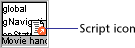
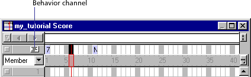
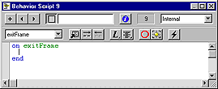

Using Director > Writing Scripts with Lingo > Scripting basics
Using Director > Writing Scripts with Lingo > Scripting basics |
Scripting basics
The information in this section introduces and explains basic Lingo scripting concepts that Director uses. If you are new to scripting, review this section before you begin writing scripts in Lingo.
Director uses four types of scripts: behaviors, movie scripts, parent scripts, and scripts attached to cast members. Behaviors, movie scripts, and parent scripts all appear as cast members in the Cast window.
Behaviors
 are scripts that are attached to sprites or frames in the Score, and are referred to as sprite behaviors or frame behaviors. The Cast window thumbnail for each behavior contains a behavior icon in the lower right corner.
are scripts that are attached to sprites or frames in the Score, and are referred to as sprite behaviors or frame behaviors. The Cast window thumbnail for each behavior contains a behavior icon in the lower right corner.
When used in this chapter, the term "behavior" refers to any Lingo script that you attach to a sprite or a frame. This differs from the behaviors that come in Director's Library Palette. For more information about Director's built-in behaviors, see Behaviors overview.
All behaviors that have been added to the cast appear in the Behavior Inspector's Behavior pop-up menu. (Other types of scripts don't appear there.)
You can attach the same behavior to more than one location in the Score. When you edit a behavior, the edited version is applied everywhere the behavior is attached in the Score.
Movie scripts respond
to events such as key presses and mouse clicks, and can control what happens when a movie starts, stops, or pauses. Handlers in a movie script can be called from other scripts in the movie as the movie plays.
A movie script icon appears in the lower right corner of the movie script's Cast window thumbnail.
Movie scripts are available to the entire movie, regardless of which frame the movie is in or which sprites the user is interacting with. When a movie plays in a window or as a linked movie, a movie script is available only to its own movie.
Parent scripts are special scripts that contain Lingo used to create child objects. You can use parent scripts to generate script objects that behave and respond similarly yet can still operate independently of each other. A parent script icon appears in the lower right corner of the Cast window thumbnail.
For information about parent scripts, see Parent scripts overview.
Scripts attached to cast members are attached directly to a cast member, independent of the Score. Whenever the cast member is assigned to a sprite, the cast member's script is available.
Unlike behaviors, movie scripts, and parent scripts, cast member scripts don't appear in the Cast window. However, if Show Cast Member Script Icons is selected in the Cast Window Preferences dialog box, cast members that have a script attached display a small script icon in the lower left corner of their thumbnails in the Cast window.

Director always executes Lingo statements starting with the first statement and continuing in order until it reaches the final statement or a statement that instructs Lingo to go somewhere else.
To set up statements so that they run when specific conditions exist, you use if...then, case, and repeat loop structures. For example, you can create an if...then structure that tests whether text has finished downloading from the Internet and, if it has, then attempts to format the text. See Controlling flow in scripts.
The order in which statements are executed affects the order in which you should place statements. For example, if you write a statement that requires some calculated value, you need to put the statement that calculates the value first. For instance, in the following example, the first statement adds two numbers, and the second assigns a string representation of the sum to a field cast member to be displayed on the Stage:
x = 2 + 2 put string(x) into member "The Answer"
About planning and debugging scripts
When you write scripts for an entire movie, the quantity and variety of scripts can be very large. Deciding which Lingo commands to use, how to structure scripts effectively, and where scripts should be placed requires careful planning and testing, especially as the complexity of your movie grows.
Before you begin writing scripts, formulate your goal and understand what you want to achieve. This is as important—and typically as time consuming—as developing storyboards for your work.
When you have an overall plan for the movie, you are ready to start writing and testing scripts. Expect this to take time. Getting scripts to work the way you want often takes more than one cycle of writing, testing, and debugging.
The best approach is to start simple and test your work frequently. When you get one part of a script working, start writing the next part. This approach helps you identify bugs efficiently and ensures that your Lingo is solid as you write more complex scripts.
The following are ways to perform common tasks for creating, attaching, and opening scripts.
To create a frame behavior (script attached to a frame):
Double-click the behavior channel in the frame that you want to attach a behavior to.

When you create a new behavior, the behavior receives the cast number of the first available location in the current Cast window.
When you create a new frame behavior, the Script window opens and already contains the line on exitFrame, followed by a line with a blinking insertion point, and then a line with the word end. This makes it easy for you to quickly attach a common behavior to the frame.

To create a sprite behavior (script attached to a sprite):
In the Score or on the Stage, select the sprite that you're attaching the behavior to. Then choose Window > Inspectors > Behavior and choose New Behavior from the Behavior pop-up menu.
When you create a new sprite behavior, the Script window opens and already contains the line on mouseUp, followed by a line with a blinking insertion point, and then a line with the word end. This makes it easy for you to quickly attach a common behavior to the sprite.
To open a behavior for editing:
1 |
Double-click the behavior in the Cast window. |
The Behavior Inspector opens. |
|
2 |
Click the Script Window icon in the Behavior Inspector. |
The Script window displays the behavior. |
|
Alternatively, you can open the Script window and cycle through the scripts until you reach the behavior.
To remove a behavior from a Score location:
Select the location and then delete the script from the list displayed in the Property Inspector (Behavior tab).
To attach existing behaviors to sprites or frames, do one of the following:
Drag a behavior from a cast to a sprite or frame in the Score or (for sprites) to a sprite on the Stage. |
|
In the score, select the sprites or frames that you're attaching the behavior to. Then choose Window > Inspectors > Behavior and choose the existing behavior from the Behavior pop-up menu. |
To create a movie script (script attached to a movie), do one of the following:
If the current script in the Script window is a movie script, click the New Script button in the Script window. (Clicking the New Script button always creates a script of the same type as the current script.) |
|
If the current script in the Script window is not a movie script, click the New Script button and then change the new script's type with the Script Type pop-up menu in the Script tab of the Property Inspector. |
|
If no sprites or scripts are selected in the cast, Score, or Stage, then open a new Script window; this will create a new movie script by default. |
To open a movie script or parent script for editing:
Double-click the script in the Cast window.
To change a script's type:
1 |
Select the script in the Cast window or open it in the Script window. |
2 |
Click the Script tab of the Property Inspector and choose a script type from the Type pop-up menu. |
To cycle through the scripts in the Script window:
Use the Previous Cast Member and Next Cast Member arrows at the top of the Script window to advance or back up to a script.
To duplicate a script:
Select the script in the Cast window and choose Duplicate from the Edit menu.
To create and open scripts attached to cast members, do one of the following:
Right-click (Windows) or Control-click (Macintosh) on a cast member in the Cast window and choose Cast Member Script from the context menu. |
|
Select a cast member in the Cast window and then click the Cast Member Script button. |
|
If the Script window is not open, choose Window > Script to open it. Then click the Previous Cast Member or Next Cast Member buttons until the script for the desired cast member appears in the window. |
Note that the first two methods also let you create a new script if none is attached to the cast member.